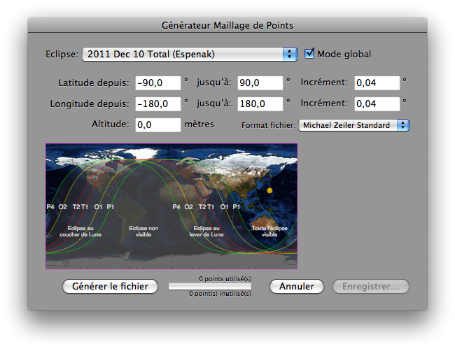

Création d’un Fichier Maillage de Points
Pour créer un fichier texte contenant un maillage de points correspondant aux circonstances locales dans Lunar Eclipse Maestro vous devez ouvrir le dialogue Générateur Maillage de Points. C’est à partir de ce type de fichier que sont créées les cartes de Michael Zeiler.
-
Dans le menu Affichage, sélectionnez Générateur de fichier d’un maillage de points…
-
Sélectionnez l’éclipse de lune puis remplissez les différents champs et sélectionnez le format du fichier généré.

Le format de fichier utilisé par Michael Zeiler pour générer ses cartes d’éclipses est optimisé pour simplifier le processus de modélisation des surfaces dans ArcGIS.
La zone où les calculs seront effectués est indiquée par un cadre mauve qui se remplira au fur et à mesure de la progression des calculs.
Lorsque le «Mode global» est désactivé, la résolution est automatiquement accrue d’un facteur quatre pour faciliter la production de cartes détaillées à grande échelle.
-
Cliquez ensuite sur le bouton Générer le fichier pour créer le fichier contenant le maillage de points correspondant. Une fois les calculs terminés, potentiellement au bout d’environ une heure, le bouton Enregistrer… sera activé: vous pouvez alors enregistrer votre fichier à l’emplacement souhaité. Les calculs effectués sont très intensifs et se font avec une grande précision, la réfraction atmosphérique étant recalculés en chaque point.
Sur la droite de la carte de l’éclipse, le statut des calculs en cours est mis à jour environ tous les un pourcent. Idem pour la barre de progression ainsi que le nombre de points déjà calculés.
Un son vous indiquera que les calculs sont terminés et si Lunar Eclipse Maestro est en arrière plan à ce moment alors son icône rebondira dans le Dock.
Note: avec les réglages standards les calculs prendront environ une heure pour générer un maillage de plus de quarante millions de points et un fichier de 5 Go ou plus.
|
Les incréments en latitude et longitude doivent être compris entre 0,000625 et 1,0 degré.
L’altitude doit être comprise entre 0 et 500000 mètres.
Le fichier temporaire contenant le résultat des calculs se trouve dans le dossier suivant: ~/Library/Caches/TemporaryItems/